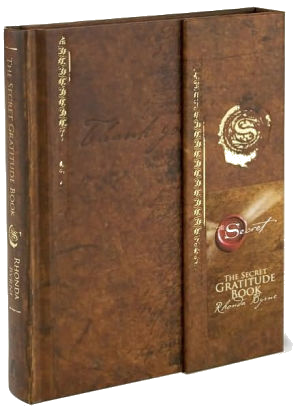

The Secret Gratitude Book

Rhonda was born in Australia and began her career as a radio producer before moving into television
production. In 2006 her work took a very different direction when she released The Secret film,
viewed
by
millions across the planet. She followed with The Secret book, a worldwide best seller available in
50
languages with over 20 million copies in print.
 Since its release in November 2006, The Secret book has remained on the New York Times bestseller
list
for
190 weeks and was named by USA Today as one of the top 20-bestselling books of the past 15 years. In
January
of 2007, Rhonda appeared on the Oprah Winfrey Show with four teachers from The Secret film. In May
of
2007,
Rhonda Byrne was recognized as one of the world’s most influential people in TIME magazine’s “The
TIME
100:
The People Who Shape Our World”, and shortly afterwards appeared in Forbes’ “The Celebrity 100”
list.
Since its release in November 2006, The Secret book has remained on the New York Times bestseller
list
for
190 weeks and was named by USA Today as one of the top 20-bestselling books of the past 15 years. In
January
of 2007, Rhonda appeared on the Oprah Winfrey Show with four teachers from The Secret film. In May
of
2007,
Rhonda Byrne was recognized as one of the world’s most influential people in TIME magazine’s “The
TIME
100:
The People Who Shape Our World”, and shortly afterwards appeared in Forbes’ “The Celebrity 100”
list.
Follow Us On